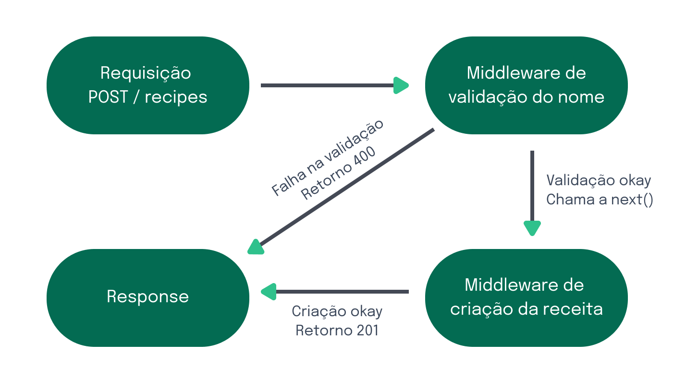

3.12 - Middlewares no Express
No Express, middlewares são funções que interceptam e processam requisições HTTP antes que cheguem ao endpoint final. Eles podem ser utilizados para validar dados, realizar autenticação, gerenciar permissões ou manipular a resposta da requisição.
Na prática, um middleware recebe três parâmetros: req, res e next. A função next() é chamada para indicar que o middleware terminou sua tarefa e que a próxima função na pilha de middlewares ou o endpoint final pode ser executado.
Como funcionam os Middlewares?
Quando fazemos uma requisição, ela passa por uma cadeia de middlewares antes de chegar ao seu destino final (o endpoint). Cada middleware pode:
- Alterar o objeto da requisição (
req) ou da resposta (res); - Encerrar o ciclo da requisição, enviando uma resposta;
- Chamar o próximo middleware da cadeia com
next().
Se nenhum middleware retornar uma resposta ou chamar o next(), a requisição ficará "travada" e quem fez a requisição não receberá uma resposta.
Exemplo Prático: Middleware para Validação de Dados
Agora, voltando à nossa API de times, vamos criar um middleware simples chamado validateTeam, que será utilizado nas requisições POST e PUT para garantir que os dados enviados contenham os campos name e initials devidamente preenchidos.
Atenção ⚠️: Fique atento ao comentário no início dos exemplos, pois ele indicará em qual arquivo o código deve ser colocado. Seguiremos esse formato para orientar onde adicionar cada trecho de código. Neste exemplo, o código deve ser inserido em
src/middlewares/validateTeam.js.
// src/middlewares/validateTeam.js
function validateTeam(req, res, next) {
const { name, initials } = req.body;
// name deve existir e ser do tipo string
if (!name || typeof name !== 'string') {
return res.status(400).json({ message: 'Invalid or missing "name" field' });
}
// initials deve existir
if (!initials) {
return res.status(400).json({ message: 'Missing "initials" field' });
}
// initials deve ter pelo menos 3 caracteres
if (initials.length !== 3) {
return res.status(400).json({ message: 'Initials must be exactly 3 characters long' });
}
// Tudo certo, passa para o próximo middleware ou rota
next();
}
module.exports = validateTeam;
Neste exemplo, o middleware verifica se os campos name e initials estão presentes e corretos. Se houver algum erro, ele retorna uma resposta com status 400 (Bad Request) e uma mensagem de erro. Caso contrário, ele chama next() para seguir adiante.
Utilizando o Middleware nas Rotas PUT e POST
Agora, vamos aplicar o validateTeam nas rotas de POST e PUT, que são usadas para criar e atualizar times.
// src/app.js
// const express = require('express');
// const fs = require('fs').promises;
// const path = require('path');
const validateTeam = require('./middlewares/validateTeam');
// const app = express();
// app.use(express.json());
// Outras rotas
// Rota POST para criar um novo time
app.post('/teams', validateTeam, async (req, res) => {
// const { name, initials } = req.body;
// Lógica para criar o time
});
// Rota PUT para atualizar um time existente
app.put('/teams/:id', validateTeam, async (req, res) => {
// const { id } = req.params;
// const { name, initials } = req.body;
// Lógica para atualizar o time
});
// module.exports = app;
Entendendo o Fluxo do Middleware validateTeam
- O middleware faz uma validação básica, verificando se os campos esperados estão presentes e corretos no
req.body.
- Se a validação for bem-sucedida, o middleware chama o
next(), permitindo que a requisição chegue ao próximo middleware ou à rota que processa a criação ou atualização do time.
- Se a validação falhar, o middleware retorna uma resposta com status
400(Bad Request), e o fluxo da requisição é interrompido. O status 400 indica que houve um erro com a solicitação feita, geralmente devido a dados inválidos ou ausentes. Esse é o comportamento esperado para informar que algo está incorreto com a requisição. Para mais detalhes sobre códigos de status HTTP como o 400, consulte a documentação no site da MDN (Mozilla Developer Network).
Abaixo, veja um diagrama ilustrando o fluxo da requisição através dos middlewares:

Passo a passo da requisição passando pelos middlewaresAssita ao vídeo abaixo, para rever sobre os conceitos de middleware e explorar novas possibilidades:
OBS da IA
Alternativa mais moderna
- Validações manuais campo a campo costumam ser trocadas por schemas declarativos (Joi, visto na seção 6, ou Zod, hoje muito popular).
Para o SAP CAP
- No CAP boa parte dessas validações é declarativa no CDS:
@mandatory,@assert.range,@assert.format,@assert.target,@readonly. O restante vai em handlersbeforeusandoreq.error()/req.reject().
entity Teams {
key ID : Integer;
name : String(100) @mandatory;
initials : String(3) @mandatory @assert.format: '^[A-Z]{3}$';
}Minhas anotações
Atalhos: ← → navegar · Ctrl K ou / buscar